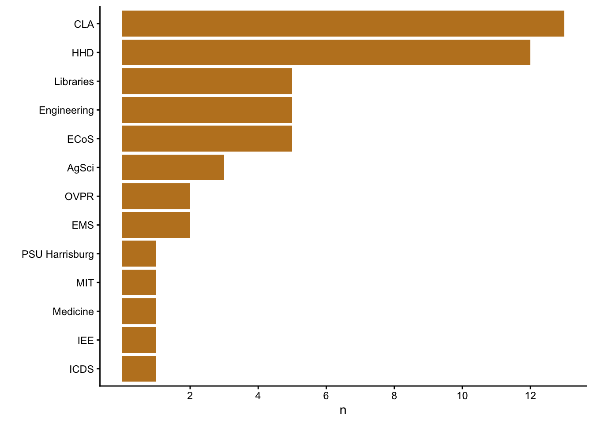
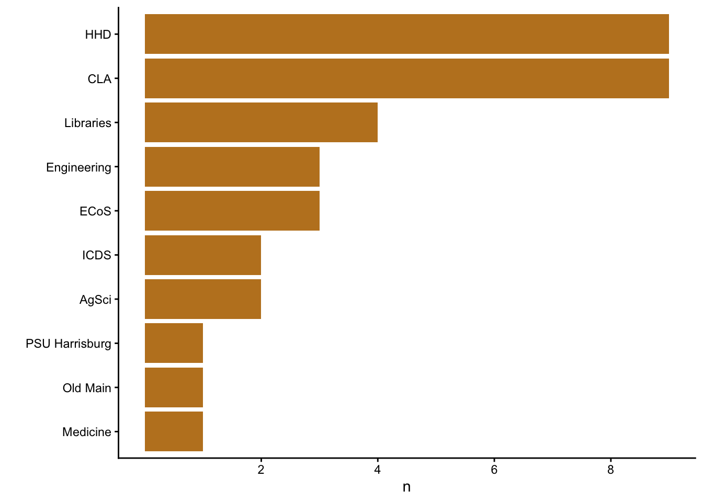

Code
suppressPackageStartupMessages(library('ggplot2'))
suppressPackageStartupMessages(library('tidyverse'))This page documents and implements the data processing workflow for bootcamp electronic sign-ins via the Qualtrics link: https://pennstate.qualtrics.com/jfe/form/SV_5vdpIekRnWpfsBo
We load some packages into memory for convenience.
suppressPackageStartupMessages(library('ggplot2'))
suppressPackageStartupMessages(library('tidyverse'))The registrations and presenters data are extracted as part of the registrations workflow and saved as CSVs. We’ll import those.
The sign-ins tab contains the sign-ins data and must be retrieved from Google Forms.
x <- assertthat::is.string(params$csv_dir)
if (!dir.exists(params$csv_dir)) {
message("Creating missing `include/csv/`.")
dir.create(params$csv_dir)
}
x <- assertthat::is.writeable(params$csv_dir)
x <- assertthat::is.string(params$psu_id)
googlesheets4::gs4_auth(email = params$psu_id)
# Sign-ins
x <- assertthat::is.string(params$sheets_id)
signins <- googlesheets4::read_sheet(params$reg_sheets_id,
sheet = "sign-ins")
x <- assertthat::assert_that(is_tibble(signins))
signins_full_fn <- file.path(params$csv_dir, params$signins_fn)
x <- assertthat::is.string(signins_full_fn)
# Registrations
registration_full_fn <- file.path(params$csv_dir, params$registration_fn)
x <- assertthat::is.string(registration_full_fn)
x <- assertthat::is.readable(registration_full_fn)
# Import "cleaned" registrations file
registrations_clean <- readr::read_csv(file = registration_full_fn, show_col_types = FALSE)
# Presenters
presenters_full_fn <- file.path(params$csv_dir, params$presenters_fn)
x <- assertthat::is.string(presenters_full_fn)
x <- assertthat::is.readable(presenters_full_fn)
presenters <- readr::read_csv(file = presenters_full_fn, show_col_types = FALSE)Check that we downloaded data.
dim(signins)[1] 97 5dim(registrations_clean)[1] 91 11dim(presenters)[1] 20 7We need to clean the data file names.
signins_clean <- janitor::clean_names(signins) |>
dplyr::rename("signin_date" = "date") |>
dplyr::mutate(name = paste0(first_name, " ", last_name))presenters_clean <- janitor::clean_names(presenters)Show variable names prior to joining.
names(signins_clean)[1] "first_name" "last_name" "email" "signin_date" "join_osi"
[6] "name" names(registrations_clean) [1] "timestamp" "email" "attend_days" "name" "dept"
[6] "position" "comments" "dropped_out" "college" ".default"
[11] ".missing" names(presenters_clean)[1] "name" "type" "agreed" "confirmed"
[5] "reminder_sent" "college" "email" Join registrations_clean and presenters_clean.
people <- dplyr::full_join(registrations_clean, presenters_clean, by = NULL, copy = TRUE)Joining with `by = join_by(email, name, college)`We have the following fields in common across the datasets: name, email.
people_signed_in <- dplyr::full_join(signins_clean, people, by = NULL, copy = TRUE)Joining with `by = join_by(email, name)`Warning in dplyr::full_join(signins_clean, people, by = NULL, copy = TRUE): Detected an unexpected many-to-many relationship between `x` and `y`.
ℹ Row 13 of `x` matches multiple rows in `y`.
ℹ Row 75 of `y` matches multiple rows in `x`.
ℹ If a many-to-many relationship is expected, set `relationship =
"many-to-many"` to silence this warning.Modify people_signed_in to flag people who did not register in advance, but came to the workshop.
people_signed_in <- people_signed_in |>
dplyr::mutate(signin_noregister = if_else((!is.na(signin_date) &
is.na(timestamp)), TRUE, FALSE),
register_nosignin = if_else((is.na(signin_date) &
!is.na(timestamp)), TRUE, FALSE))readr::write_csv(people_signed_in, file.path(params$csv_dir, "bootcamp-2026-signins.csv"))mon_signins <- people_signed_in |>
dplyr::filter(stringr::str_detect(as.character(signin_date), pattern = "2026-05-11"))
tue_signins <- people_signed_in |>
dplyr::filter(stringr::str_detect(as.character(signin_date), "2026-05-12"))We had n=57 attendees and presenters sign in. Of these, n=18 attended but did not register in advance. N=0 registered or committed to present but did not sign-in.
Here is the distribution of units.
mon_signins |>
dplyr::filter(!is.na(signin_date),
!is.na(college)) |>
dplyr::count(college, sort = TRUE) |>
dplyr::mutate(college = fct_reorder(college, n)) |>
ggplot() +
geom_bar(aes(x = college, y = n), fill = "#BF8226", stat = "identity") +
scale_y_continuous(breaks = seq(2, 24, by = 2)) +
theme(legend.position = "right") +
theme(legend.title = element_blank()) +
xlab("") +
theme_classic() +
coord_flip()
We had n=42 attendees and presenters sign in. Of these, n=16 attended but did not register in advance. N=0 registered or committed to present but did not sign-in.
Here is the distribution of units.
tue_signins |>
dplyr::filter(!is.na(signin_date),
!is.na(college)) |>
dplyr::count(college, sort = TRUE) |>
dplyr::mutate(college = fct_reorder(college, n)) |>
ggplot() +
geom_bar(aes(x = college, y = n), fill = "#BF8226", stat = "identity") +
scale_y_continuous(breaks = seq(2, 24, by = 2)) +
theme(legend.position = "right") +
theme(legend.title = element_blank()) +
xlab("") +
theme_classic() +
coord_flip()